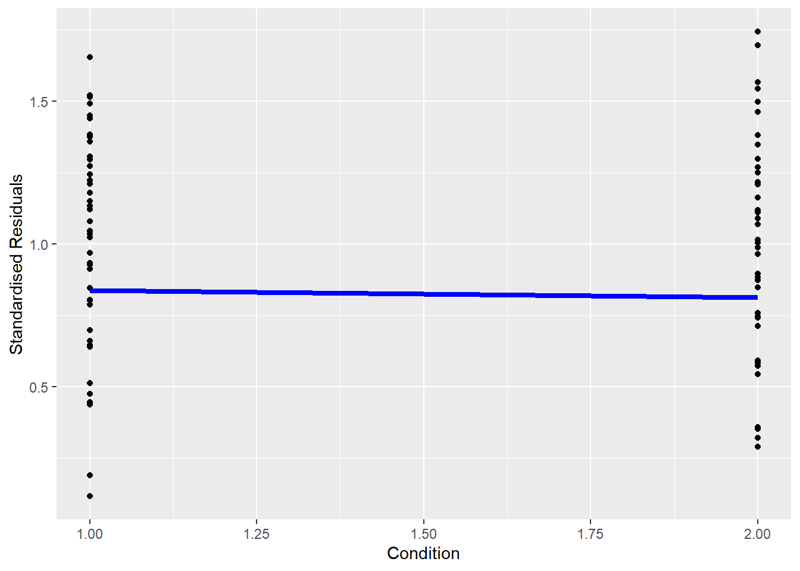
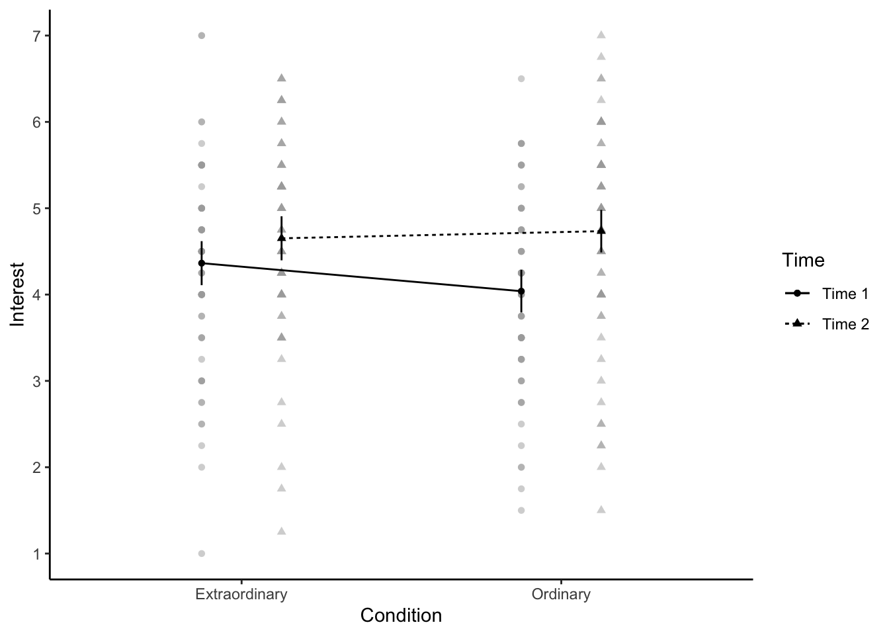

# Load the packages below
#library("rcompanion")
library(effectsize)
#library("car")
library(broom)
library(afex)
library(emmeans)
library(tidyverse)
library(performance)
# Load the data file
# This should be the Zhang_2014.csv file
zhang_data <- read_csv("data/Zhang_2014.csv")
# Wrangle the data for plotting.
# select and rename key variables
# mutate to add participant ID and recode
zhang_wide <- zhang_data %>%
select(Gender,
Age,
Condition,
time1_interest = T1_Predicted_Interest_Composite,
time2_interest = T2_Actual_Interest_Composite) %>%
mutate(participant_ID = row_number(),
Condition = case_match(Condition,
1 ~ "Ordinary",
2 ~ "Extraordinary"))
zhang_long <- zhang_wide %>%
pivot_longer(cols = time1_interest:time2_interest,
names_to = "Time",
values_to = "Interest")13 Factorial ANOVA
In the previous chapter, you learnt how to conduct and interpret a one-way ANOVA in R. These are flexible models where you have one independent variable (IV) with three or more levels. They get you a long way but sometimes your research question and design calls for multiple IVs or factors.
In this chapter, we extend the ANOVA framework to include two or more IVs/factors and their interaction. We will show you how to run a factorial ANOVA using the
Chapter Intended Learning Outcomes (ILOs)
By the end of this chapter, you will be able to:
Apply and interpret a factorial ANOVA.
Break down the results of a factorial ANOVA using post-hocs tests and apply a correction for multiple comparisons.
Check statistical assumptions for factorial ANOVA through your understanding of the design and diagnostic plots.
Visualise the results of a factorial ANOVA through an interaction plot.
13.1 Chapter preparation
13.1.1 Introduction to the data set
For this chapter, we are using open data from experiment 3 in Zhang et al. (2014) which you might remember from Chapter 7. Now you have developed your inferential skills, we can return to reproduce their analyses. The abstract of their article is:
Although documenting everyday activities may seem trivial, four studies reveal that creating records of the present generates unexpected benefits by allowing future rediscoveries. In Study 1, we used a time-capsule paradigm to show that individuals underestimate the extent to which rediscovering experiences from the past will be curiosity provoking and interesting in the future. In Studies 2 and 3, we found that people are particularly likely to underestimate the pleasure of rediscovering ordinary, mundane experiences, as opposed to extraordinary experiences. Finally, Study 4 demonstrates that underestimating the pleasure of rediscovery leads to time-inconsistent choices: Individuals forgo opportunities to document the present but then prefer rediscovering those moments in the future to engaging in an alternative fun activity. Underestimating the value of rediscovery is linked to people’s erroneous faith in their memory of everyday events. By documenting the present, people provide themselves with the opportunity to rediscover mundane moments that may otherwise have been forgotten.
In summary, they were interested in whether people could predict how interested they would be in rediscovering past experiences. They call it a “time capsule” effect, where people store photos or messages to remind themselves of past events in the future. They predicted participants in the ordinary group would underestimate their future feelings (i.e., there would be a bigger difference between time 1 and time 2 measures) compared to participants in the extraordinary group.
Now we are focusing on the analysis rather than just visualisation, we can describe the experiment as a 2 x 2 mixed design. The first IV is time (time1, time2) and is within-subjects. The second IV is type of event (ordinary vs. extraordinary) and is a between-subjects factor. We will then use interest as a DV for a composite measure which took the mean of items on interest, meaningfulness, and enjoyment
13.1.2 Organising your files and project for the chapter
Before we can get started, you need to organise your files and project for the chapter, so your working directory is in order.
In your folder for research methods and the book
ResearchMethods1_2/Quant_Fundamentals, create a new folder calledChapter_13_F_ANOVA. WithinChapter_13_F_ANOVA, create two new folders calleddataandfigures.Create an R Project for
Chapter_13_F_ANOVAas an existing directory for your chapter folder. This should now be your working directory.Create a new R Markdown document and give it a sensible title describing the chapter, such as
13 Factorial ANOVA. Delete everything below line 10 so you have a blank file to work with and save the file in yourChapter_13_F_ANOVAfolder.If you must download the data again, please save the following file: Zhang_2014.csv. Right click the link and select “save link as”, or clicking the link will save the files to your Downloads. Make sure that you save the file as “.csv”. Save or copy the file to your
data/folder withinChapter_13_F_ANOVA.
You are now ready to start working on the chapter!
13.1.3 Activity 1 - Load the packages and read the data
We already worked on the data wrangling in Chapter 7, so please type or copy and paste the following code to prepare for the chapter.
For different functions, we need the data in wide- or long-format, so we have two versions of the data prepared for the chapter. Pay careful attention to when you need one version or the other.
13.1.4 Activity 2 - Calculate descriptive statistics
Try this
Before we start on the inferential statistics, one key part of understanding your data and reporting for context in a report is calculating descriptive statistics like the mean and standard deviation.
For the combination of Condition and Time, calculate the mean and standard deviation of Interest. We will need this at the end of the chapter, so save your results to the object name zhang_descriptives.
Show me the solution
You should have the following in a code chunk:
zhang_descriptives <- zhang_long %>%
group_by(Condition, Time) %>%
summarise(mean = round(mean(Interest, na.rm = TRUE), 2),
sd = round(sd(Interest, na.rm = TRUE), 2))`summarise()` has grouped output by 'Condition'. You can override using the
`.groups` argument.| Condition | Time | mean | sd |
|---|---|---|---|
| Extraordinary | time1_interest | 4.36 | 1.13 |
| Extraordinary | time2_interest | 4.65 | 1.14 |
| Ordinary | time1_interest | 4.04 | 1.09 |
| Ordinary | time2_interest | 4.73 | 1.24 |
13.1.5 Activity 3 - Create a violin-boxplot
To communicate your findings, it is also important to visualise your data. Initially, this might be a quick boxplot for exploratory data analysis, but something like a violin-boxplot would be great for communicating your findings in a report.
Try this
Try and recreate the following violin-boxplot that you learnt how to create in Chapter 7. The finer details like the colour scheme are not important, but see how many features you can recreate before checking the code.

Show me the solution
You should have the following in a code chunk:
# specify as an object, so we only change it in one place
dodge_value <- 0.9
zhang_long %>%
mutate(Time = case_match(Time,
"time1_interest" ~ "Time 1",
"time2_interest" ~ "Time 2")) %>%
ggplot(aes(y = Interest, x = Condition, fill = Time)) +
geom_violin(alpha = 0.5) +
geom_boxplot(width = 0.2,
alpha = 0.7,
fatten = NULL,
position = position_dodge(dodge_value)) +
stat_summary(fun = "mean",
geom = "point",
position = position_dodge(dodge_value)) +
stat_summary(fun.data = "mean_cl_boot",
geom = "errorbar",
width = .1,
position = position_dodge(dodge_value)) +
scale_fill_viridis_d(option = "E") +
scale_y_continuous(name = "Interest score (1-7)",
breaks = c(1:7)) +
theme_classic()13.2 Factorial ANOVA
To run the factorial ANOVA, we will be using the aov_ez if you need further information.
13.2.1 Activity 4 - Using the aov_ez() function.
Before we show you the code, try and complete the following skeleton version first. Think about what variable in the data corresponds to each argument.
Save the ANOVA model to an object called mod_factorial to be consistent with explanations below. For making it easier to report the results later, pull out the mod_factorial$anova_table component and apply the tidy() function from
Show me the solution
You should have the following in a code chunk:
We can look at the results of the factorial ANOVA by printing the object.
Look at the results. Remember the pre-class information about how to read p-values in scientific notation.
Is the main effect of Condition significant?
Is the main effect of Time significant?
Is the two-way interaction significant?
13.2.2 Activity 5 - Checking assumptions for factorial ANOVA
The assumptions for a factorial ANOVA are the same as the one-way ANOVA.
The DV is interval or ratio data.
The observations should be independent.
The residuals should be normally distributed.
There should be homogeneity of variance between the groups.
As before, we know assumption 2 is met from the design of the study. Assumption 1 throws up an interesting issue which is the problem of ordinal data. Ordinal data are the kind of data that come from Likert scales and are very common in psychology. The problem is that ordinal data are not interval or ratio data, there’s a fixed number of integer values they can take (the values of the Likert scale) and you cannot claim that the distance between the values is equal (is the difference between strongly agree and agree the same as the difference between agree and neutral?).
Technically, we should not use an ANOVA to analyse ordinal data - but almost everyone does. Many people argue that if you take the average of multiple Likert scale items, you can interpret the data as if they are interval and they can be normally distributed. Other people argue you should use non-parametric methods or more complex models such as ordinal regression for this type of data, but it is beyond the scope of what we cover in this course (if you are super interested, there is a PsyTeachR book for another course - Statistics and Research Design - which covers ordinal regression). Whichever route you choose, you should understand the data you have and you should be able to justify your decision.
To test assumption 3, you can run check_model() from mod_factorial). Unless you add the argument re_formula = NA, you get a little warning saying the function does it anyway. The background of this argument is beyond the scope of this course, but expressed as a linear model, a mixed ANOVA looks like something called a mixed-effects model, so this argument is saying that there is not a formula for it, since we did not have one.
Does it look like we have any obvious problems with normality here?
The one annoying thing here is we do not get a diagnostic plot for checking homogeneity of variance / homoscedasticity. We can create our own using the lm component of the model object (mod_factorial$lm), but it takes a few steps. In the code below:
We first isolate the standardised residuals of the model object. We must convert it to a data frame and rename the two columns.
We combine the residuals with the wide version of the data.
We pivot the data longer so all the residuals are in one column and create a new variable to take the square root of the absolute residuals. This recreates how the diagnostic plots you saw in Chapters 8, 9, and 12 look.
Finally, we plot the standardised residuals and add a line to join the means of each group. If the line is roughly flat, we support homoscedasticity. If the line angles up or down substantially, then this points to signs of heteroscedasticity.
# Isolate standardised residuals as a data frame
residuals <- as.data.frame(rstandard(mod_factorial$lm)) %>%
select(residuals_time1 = time1_interest,
residuals_time2 = time2_interest)
# add residuals to the wide version of the data, so we have the groups
zhang_wide <- zhang_wide %>%
bind_cols(residuals)
# Pivot longer and calculate the square root of absolute standardised residuals
residuals_long <- zhang_wide %>%
pivot_longer(cols = residuals_time1:residuals_time2,
names_to = "Time",
values_to = "Residuals") %>%
mutate(std_residuals = sqrt(abs(Residuals)))
# Plot the residuals
residuals_long %>%
# we need groups as numbers for the line to plot
mutate(Condition = case_match(Condition,
"Ordinary" ~ 1,
"Extraordinary" ~ 2)) %>%
ggplot(aes(x = Condition, y = std_residuals)) +
geom_point() +
# add line joining the mean of residuals per group
stat_summary(geom = "line",
fun = mean,
color = "blue",
linewidth = 1.5) +
labs(x = "Condition", y = "Standardised Residuals")
Does it look like we have any obvious problems with homoscedasticity here?
13.2.3 Activity 6 - Post-hoc tests
Because the interaction is significant, we should follow this up with post-hoc tests using emmeans() to determine which comparisons are significant. If the overall interaction is not significant, you should not conduct additional tests.
emmeans() requires you to specify the aov object, and then the factors you want to contrast. For an interaction, we use the notation pairwise ~ IV1 | IV2 and you specify which multiple comparison correction you want to apply.
Run the below code and view the results.
# run the tests
posthoc_factorial <- emmeans(mod_factorial,
pairwise ~ Time | Condition,
adjust = "bonferroni")
posthoc_factorial$emmeans
Condition = Extraordinary:
Time emmean SE df lower.CL upper.CL
time1_interest 4.36 0.137 128 4.09 4.63
time2_interest 4.65 0.147 128 4.36 4.94
Condition = Ordinary:
Time emmean SE df lower.CL upper.CL
time1_interest 4.04 0.139 128 3.76 4.31
time2_interest 4.73 0.149 128 4.44 5.03
Confidence level used: 0.95
$contrasts
Condition = Extraordinary:
contrast estimate SE df t.ratio p.value
time1_interest - time2_interest -0.288 0.136 128 -2.123 0.0357
Condition = Ordinary:
contrast estimate SE df t.ratio p.value
time1_interest - time2_interest -0.695 0.138 128 -5.049 <.0001In the output, we first get the estimated marginal means for the combination of IVs. We then get the contrasts we requested. This looks at the difference in levels of the first IV for each level of the second IV.
You can use tidy() to tidy up the output of the contrasts and save it into a tibble which makes it easier to use in inline code later.
# tidy up the output of the tests
contrasts_factorial <- posthoc_factorial$contrasts %>%
tidy()
contrasts_factorial| Condition | term | contrast | null.value | estimate | std.error | df | statistic | p.value |
|---|---|---|---|---|---|---|---|---|
| Extraordinary | Time | time1_interest - time2_interest | 0 | -0.2878788 | 0.1356011 | 128 | -2.122983 | 0.0356806 |
| Ordinary | Time | time1_interest - time2_interest | 0 | -0.6953125 | 0.1377035 | 128 | -5.049343 | 0.0000015 |
Note that because there are two IVs/factors, we could also reverse the order. Above, we get the results contrasting time 1 and time 2 for each event condition. Instead, we could look at the difference between ordinary and extraordinary events at each time point.
Run the code below and compare the output to contrast_factorial. Look at how the contrasts are expressed subtly different when you switch the order. Think carefully about your research question and hypotheses for which way around is the most informative.
posthoc_factorial2 <- emmeans(mod_factorial,
pairwise ~ Condition | Time,
adjust = "bonferroni")
posthoc_factorial2
contrasts_factorial2 <- posthoc_factorial2$contrasts %>%
tidy()
contrasts_factorial2$emmeans
Time = time1_interest:
Condition emmean SE df lower.CL upper.CL
Extraordinary 4.36 0.137 128 4.09 4.63
Ordinary 4.04 0.139 128 3.76 4.31
Time = time2_interest:
Condition emmean SE df lower.CL upper.CL
Extraordinary 4.65 0.147 128 4.36 4.94
Ordinary 4.73 0.149 128 4.44 5.03
Confidence level used: 0.95
$contrasts
Time = time1_interest:
contrast estimate SE df t.ratio p.value
Extraordinary - Ordinary 0.3246 0.195 128 1.661 0.0992
Time = time2_interest:
contrast estimate SE df t.ratio p.value
Extraordinary - Ordinary -0.0829 0.209 128 -0.397 0.6923| Time | term | contrast | null.value | estimate | std.error | df | statistic | p.value |
|---|---|---|---|---|---|---|---|---|
| time1_interest | Condition | Extraordinary - Ordinary | 0 | 0.3245739 | 0.1954025 | 128 | 1.6610529 | 0.0991504 |
| time2_interest | Condition | Extraordinary - Ordinary | 0 | -0.0828598 | 0.2088845 | 128 | -0.3966778 | 0.6922656 |
Because our main effects (condition and time) only have two levels, we do not need to do any post-hoc tests to determine which conditions differ from each other, however, if one of our factors had three levels then we could use emmeans() to calculate the contrast for the main effects, like we did for the one-way ANOVA.
Finally, to calculate standardised effect sizes for the pairwise comparisons, we again need to do this individually using cohens_d() from
As we have a mixed design, we must follow a slightly different process for each comparison. Cohen’s d has a different calculation for between-subjects and within-subjects contrasts, so we must express it differently. For the first comparison, we are interested in the difference between time 1 and time 2 for each group, so this represents a within-subjects comparison.
# time 1 vs time 2 for Extraordinary group
d_extraordinary <- cohens_d(x = "time1_interest",
y = "time2_interest",
paired = TRUE,
data = filter(zhang_wide,
Condition == "Extraordinary"))
# time 1 vs time 2 for Ordinary group
d_ordinary <- cohens_d(x = "time1_interest",
y = "time2_interest",
paired = TRUE,
data = filter(zhang_wide,
Condition == "Ordinary"))
# bind together the two contrasts
Condition_ds <- bind_rows(d_extraordinary,
d_ordinary)
# add the contrasts to the emmeans tidy table
contrasts_factorial <- contrasts_factorial %>%
bind_cols(Condition_ds)
contrasts_factorial| Condition | term | contrast | null.value | estimate | std.error | df | statistic | p.value | Cohens_d | CI | CI_low | CI_high |
|---|---|---|---|---|---|---|---|---|---|---|---|---|
| Extraordinary | Time | time1_interest - time2_interest | 0 | -0.2878788 | 0.1356011 | 128 | -2.122983 | 0.0356806 | -0.3086922 | 0.95 | -0.554559 | -0.0605597 |
| Ordinary | Time | time1_interest - time2_interest | 0 | -0.6953125 | 0.1377035 | 128 | -5.049343 | 0.0000015 | -0.5552045 | 0.95 | -0.816696 | -0.2898832 |
For the second comparison, we are interested in the difference between ordinary and extraordinary at each time point, so this represents a between-subjects comparison.
# Extraordinary vs ordinary at time 1
d_time1 <- cohens_d(time1_interest ~ Condition,
data = zhang_wide)
# Extraordinary vs ordinary at time 2
d_time2 <- cohens_d(time2_interest ~ Condition,
data = zhang_wide)
# bind the two contrasts together
Time_ds <- bind_rows(d_time1,
d_time2)
# add the contrasts to the emmeans tidy table
contrasts_factorial2 <- contrasts_factorial2 %>%
bind_cols(Time_ds)
contrasts_factorial2| Time | term | contrast | null.value | estimate | std.error | df | statistic | p.value | Cohens_d | CI | CI_low | CI_high |
|---|---|---|---|---|---|---|---|---|---|---|---|---|
| time1_interest | Condition | Extraordinary - Ordinary | 0 | 0.3245739 | 0.1954025 | 128 | 1.6610529 | 0.0991504 | 0.2914024 | 0.95 | -0.0548458 | 0.6365251 |
| time2_interest | Condition | Extraordinary - Ordinary | 0 | -0.0828598 | 0.2088845 | 128 | -0.3966778 | 0.6922656 | -0.0695901 | 0.95 | -0.4134010 | 0.2744922 |
13.2.4 Activity 7 - Creating an interaction plot
When you have a factorial design, one powerful way of visualising the data is through an interaction plot. This is essentially a line graph where the x-axis has one IV and separate lines for a second IV. However, once you have the factorial ANOVA model, you can add confidence intervals to the plot to visualise uncertainty. afex_plot() which you can use with the model object you created.
In the code below, there are a few key argument to highlight:
objectis theafex model you created.xis the variable you want on the x-axis.traceis the variable you want to plot as separate lines.errorcontrols whether the error bars show confidence intervals for between-subjects or within-subjects. In a mixed design, these have different properties, so you must think about which you want to plot and highlight to the reader.factor_levelslets you edit the levels of factors you plot, such as renaming or reordering them. You add each factor into a list but check the documentation and vignettes for other options.
afex_plot(object = mod_factorial,
x = "Condition",
trace = "Time",
error = "between",
factor_levels = list(Time = c("Time 1", "Time 2")))
One handy feature about this function is it uses
afex_plot(mod_factorial,
x = "Condition",
trace = "Time",
error = "between",
factor_levels = list(Time = c("Time 1", "Time 2"))) +
theme_classic() +
scale_y_continuous(breaks = 1:7)
Note
Since afex_plot() uses ggsave() to save your plots and insert them into your work.
13.3 Reporting the results of your factorial ANOVA
Now you have all your values, we can work on the write-up of your results.
In the in-line code demonstration below, we manually entered p-values where they are < .001. There is a way to get R to produce this formatting but it’s overly complicated for our purposes in this course. If you want to push yourself, look up the papaja package for creating reproducible manuscripts.
The values of partial eta-squared do not match between our analysis and those reported in the paper. We have not figured out why this is yet, so if you know, please get in touch!
We have also replaced the simple effects in the main paper with our pairwise comparisons.
Copy and paste the text and inline code below into white-space in your R Markdown document. If you saved all the descriptives, model, and contrasts using the same object names as us, this should knit.
We conducted the same repeated measures ANOVA with interest as the dependent measure and again found a main effect of time, F(`r factorial_output$num.Df[2]`, `r factorial_output$den.Df[2]`) = `r factorial_output$statistic[2] %>% round(2)`, p < .001, ηp2 = `r factorial_output$ges[2] %>% round(3)`; anticipated interest at Time 1 (M = `r zhang_descriptives$mean[1] %>% round(2)`), SD = `r zhang_descriptives$sd[1]%>% round(2)`)) was lower than actual interest at Time 2 (M = `r zhang_descriptives$mean[2]%>% round(2)`, SD = `r zhang_descriptives$sd[2]%>% round(2)`). We also observed an interaction between time and type of experience, F(`r factorial_output$num.Df[3]`, `r factorial_output$den.Df[3]`) = `r factorial_output$statistic[3] %>% round(3)`, p = `r factorial_output$p.value[3] %>% round(2)`, ηp2 = `r factorial_output$ges[3] %>% round(3)`. Pairwise comparisons revealed that for ordinary events, predicted interest at Time 1 (M = `r zhang_descriptives$mean[3]%>% round(2)`, SD = `r zhang_descriptives$sd[3]%>% round(2)`) was lower than experienced interest at Time 2 (M = `r zhang_descriptives$mean[4]%>% round(2)`, SD = `r zhang_descriptives$sd[4]%>% round(2)`), t(`r contrasts_factorial$df[2]%>% round(2)`) = `r contrasts_factorial$statistic[2]%>% round(2)`, p < .001, d = `r contrasts_factorial$Cohens_d[2]%>% round(2)`. Although predicted interest for extraordinary events at Time 1 (M = `r zhang_descriptives$mean[1]%>% round(2)`, SD = `r zhang_descriptives$sd[1]%>% round(2)`) was lower than experienced interest at Time 2 (M = `r zhang_descriptives$mean[2]%>% round(2)`, SD = `r zhang_descriptives$sd[2]%>% round(2)`), t(`r contrasts_factorial$df[1]%>% round(2)`) = `r contrasts_factorial$statistic[1]%>% round(2)`, p < .001, d = `r contrasts_factorial$Cohens_d[1]%>% round(2)`, the magnitude of underestimation was smaller than for ordinary events.We conducted the same repeated measures ANOVA with interest as the dependent measure and again found a main effect of time, F(1, 128) = 25.88, p < .001, ηp2 = 0.044; anticipated interest at Time 1 (M = 4.36), SD = 1.13)) was lower than actual interest at Time 2 (M = 4.65, SD = 1.14). We also observed an interaction between time and type of experience, F(1, 128) = 4.445, p = 0.04, ηp2 = 0.008. Pairwise comparisons revealed that for ordinary events, predicted interest at Time 1 (M = 4.04, SD = 1.09) was lower than experienced interest at Time 2 (M = 4.73, SD = 1.24), t(128) = -5.05, p < .001, d = -0.56. Although predicted interest for extraordinary events at Time 1 (M = 4.36, SD = 1.13) was lower than experienced interest at Time 2 (M = 4.65, SD = 1.14), t(128) = -2.12, p < .001, d = -0.31, the magnitude of underestimation was smaller than for ordinary events.
13.4 End of Chapter
Well done, you have now covered the ANOVA section of the course to learn how to express experimental designs into statistical models. ANOVA and factorial ANOVA are incredibly flexible tools where you can start to combine multiple independent variables. You might have between-subject factors, within-subject factors, or a combination of the two in a mixed design. The most important thing to keep in mind is your research question, hypothesis, and design come first. Factorial ANOVA can get arbitrarily more complicated but try and avoid the temptation to create complex models just because you can. You do not get extra points for complication, it is better to think about which model will let you address your research question.
In the next chapter, we finish the core chapters on the final extension of the general linear model we cover in this course. In Research Methods 1, you learnt about simple linear regression when you only have one predictor. In multiple linear regression, you can add two or more predictors, and even the interaction between predictors.